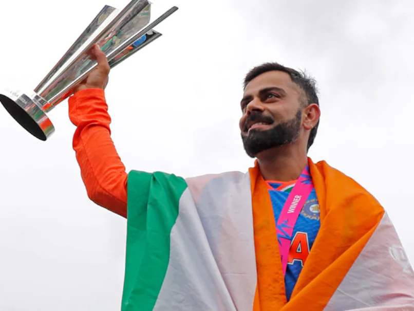
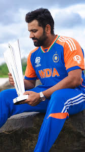
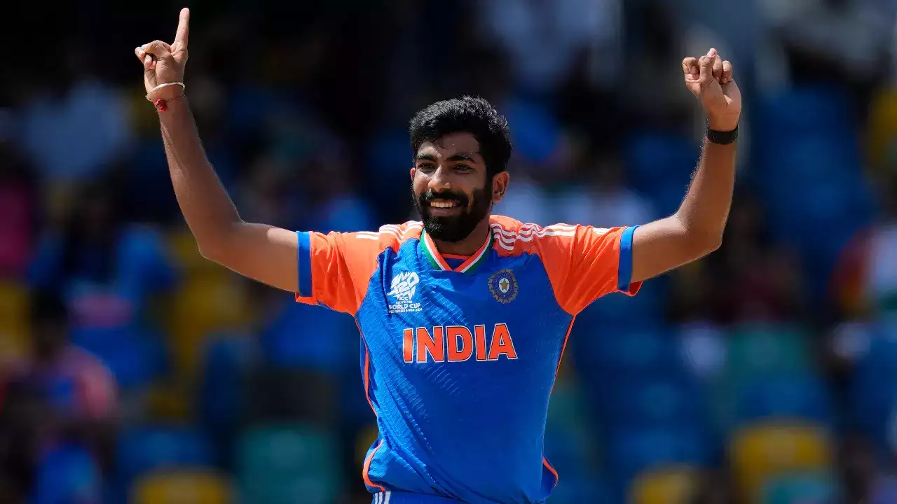

Virat Kohli
Virat Kohli is an Indian cricketer and the current captain of the India national team. He is widely regarded as one of the best batsmen in the world.
Rohit Sharma
Rohit Sharma is an Indian cricketer and the vice-captain of the India national team in limited-overs formats. He is known for his aggressive batting style.
Jasprit Bumrah
Jasprit Bumrah is an Indian cricketer who plays as a right-arm fast bowler for the Indian national cricket team. He is known for his unorthodox bowling action.